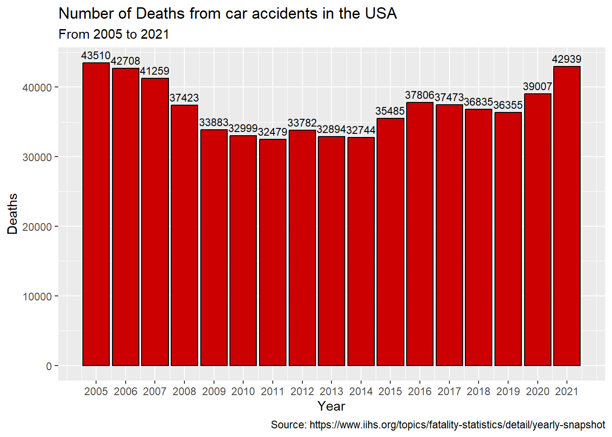

library(tidyverse)library(ggplot2)number_of_casualties <-read_csv("data/Number_of_casualties_usa.csv")ggplot(number_of_casualties %>%filter(Year >=2005)) +geom_col(aes(x = Year, y = Deaths), fill ="#CC0000", color ="black") +geom_text(aes(x = Year, y = Deaths, label = Deaths), vjust =-0.5, color ="black", size =3) +# Adjust vjust and size as neededscale_x_continuous(breaks =seq(2005, 2021, 1)) +labs(title ="Number of Deaths from car accidents in the USA",subtitle ="From 2005 to 2021",caption ="Source: https://www.iihs.org/topics/fatality-statistics/detail/yearly-snapshot")

Our data visualization project delves into the complex and painful landscape of car accidents. The choice of exploring car accidents stems from the societal impact and safety considerations associated with road incidents. over 30,000 people are killed every year from car accidents in the USA. Just in 2022 almost 43,000 people in the USA died in car accidents*1. Understanding the underlying factors contributing to accidents can provide policy makers insights and key action items to help reduce the number and or severity of accidents. By leveraging data visualization techniques, we intend to unravel hidden trends and relationships that could inform policymakers, law enforcement, and the community at large.
The dataset we are using encompasses diverse attributes, ranging from temporal details like “Crash Date/Time” to factors such as “Hit/Run,” “Weather,” and “Road Condition.” This comprehensive dataset, sourced from the Public-Safety website of the Montgomery County, serves as a valuable resource for understanding the dynamics of vehicular incidents.
Our goal in this project can be divided into three parts. In each part we will answer some guiding question.
1.0.0.1 Part 1: Time Series Analysis
What temporal trends or seasonality can be identified in the collision data?
Are there variations in accident frequencies across different months, days of the week, or hours of the day?
How do holidays impact the frequency of accidents? (that is - do weeks with holidays tend to have different frequency of accidents)
1.0.0.2 Part 2: Hit-and-Run Incidents:
What correlations exist between various features and the occurrence of hit-and-run accidents?
Can insights derived from the dataset offer recommendations for mitigating hit-and-run incidents?
1.0.0.3 Part 3: Geospatial Exploration:
Can we identify specific roads with a higher concentration of accidents, and what common attributes do they share?
Are there geographical patterns unique to “regular” accidents versus “Hit and Run” incidents?
To conclude, our project not only aims to visualize the data but also to provide meaningful interpretations that contribute to the broader topic of road safety and accident prevention. For readers unfamiliar with the subject, our visualizations and analyses will offer an accessible entry point into the multifaceted world of car accidents and their implications.